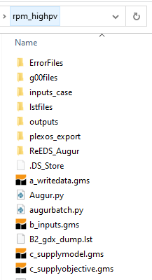
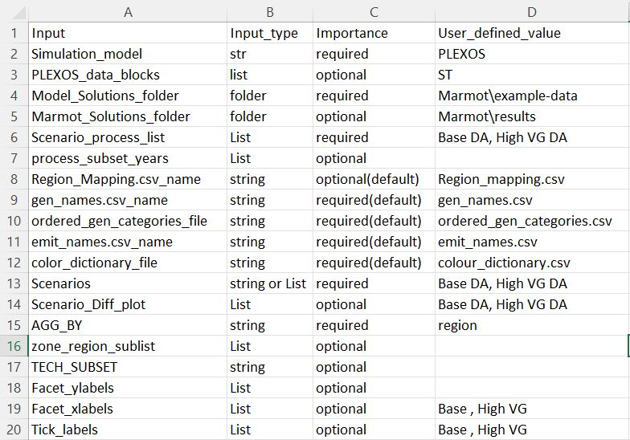

How to process and format ReEDS results with Marmot#
This guide will show you how to setup Marmot to process ReEDS results. The guide will focus on using the Marmot_user_defined_inputs: csv file to correctly point to ReEDS outputs and scenarios.
ReEDS specific Dependencies#
To format ReEDS results you will need to ensure the following dependecies are met:
Install gdxpds (You may already have this module installed if you are using the latest Marmot environment):
pip install gdxpds
Install GAMS
Put the GAMS directory in your PATH and/or assign it to the GAMS_DIR environment variable, on Windows GAMS will be installed on the C drive by default such as
C:\GAMS\40After adding the GAMS directory to your path restart your computer.
ReEDS output folder structure#
As of writing (October 2022), the typical ReEDS run folder will look similar to the following:
Marmot mainly cares about the outputs and inputs_case directories located here, where gdx results and ReEDS metadata are stored.
The name given to this ReEDS run folder (rpm_highpv in the above example) is used as a scenario identifier when formatting results with Marmot, this will be explained in the next section of this guide.
Setting up the Marmot input files#
Open the Marmot_user_defined_inputs: csv file located in the Marmot/input_files directory.
You can either edit this file directly or preferably make a copy of it and use the config: yml file to make it the default input file as described in the How-to Guide, How to change default input files with the config.yml
If you open the file in a spreadsheet programme such as Microsoft Excel you will see the following structure:
The file has 4 columns, with column D used for adjusting input. To format ReEDS results we will just need to adjust values for rows 2 and 4-7 as above.
Simulation_model lets Marmot know what model it is formatting, change this to ReEDS.
Model_Solutions_folder should point to the parent of your ReEDS run folder.
Marmot_Solutions_folder is the location where Marmot will save its formatted results, set this to any conveniant location.
Scenario_process_list identifies the scenarios we want to process with the formatter. This should include the name of the ReEDS run folder you want to process. e.g rpm_highpv. If you want to format multiple ReEDS runs/scenarios and they are located in parallel to this directory, include them here comma separated.
process_subset_years will optionally only format results for the years listed here. If you want to format results for all ReEDS years, leave this entry blank.
Next open the reeds_properties: csv file also located in the input_files directory. This file determines which ReEDS properties to process with Marmot. The data_set corresponds to the ReEDS property located in the results gdx file. Set whatever property you want to process to True using the collect_data column. This file is explained in detail in the Input File References section.
After these values have been set, you are ready to run Marmot. Follow the Start Marmot formatter section of the Running the Marmot code guide if you are unsure of how to do this.
Marmot will then begin formatting your properties and will print messages to the terminal. Once completed the formatted outputs will be in a new folder called Processed_HDF5_folder within the Marmot_Solutions_folder you set above.